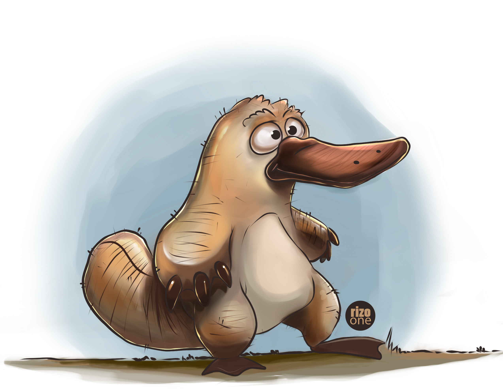
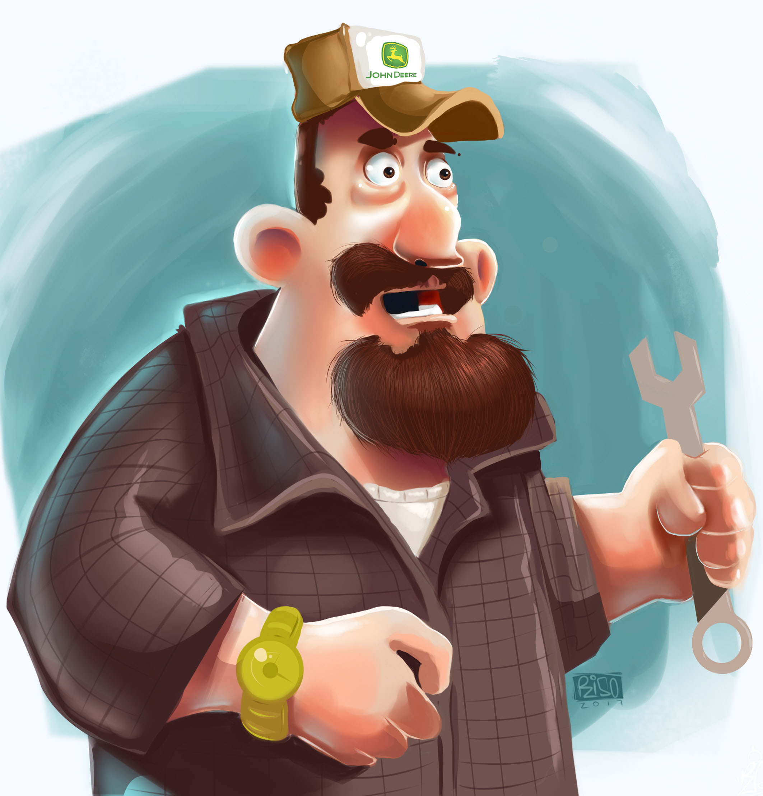

Ornitorrinco
Propuesta para personaje principal de cuento infantil para la empresa The Book Project. La dinamica consistia en crear al personaje principal del cuento para niños, este debía ser un personaje divertido y con muchas cualidades.


Estudio de personajes
El estudio de personajes muestra diferentes estilos que se pueden adaptar facilmente a cualquier plataforma y cualquier interes que el comprador necesite. En esta oportunidad muestro a un mecánico, representa a uno de los oficios mas importantes en cualquier sociedad, ya que ellos se encargan de dar mantenimiento a nuestros medios de transporte, es por esto que quise homenajear a las personas que viven de ese trabajo, por medio de la ilustracion.